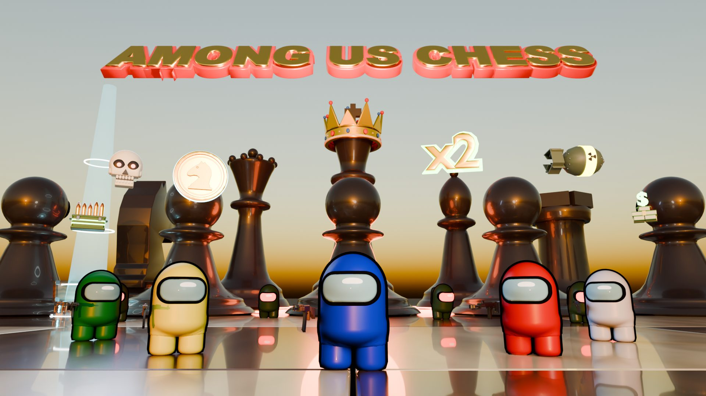
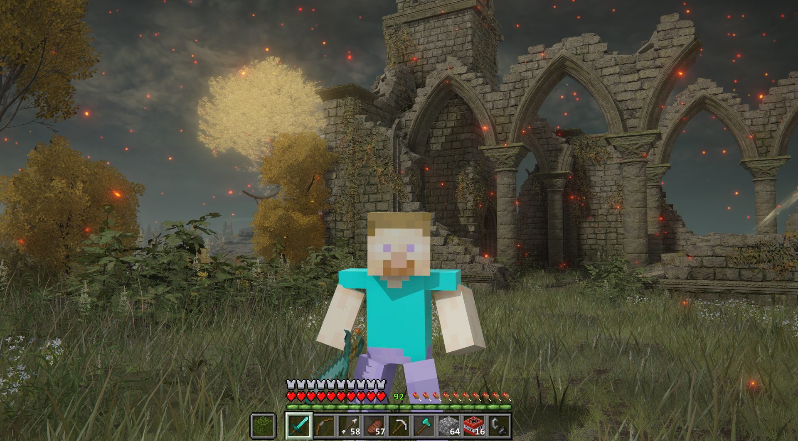

01
Among Us Chess
PlayableA crewmate dropped into FPS Chess, with weapons, a crowd and bosses on the giant board.
Reverse engineering — with AI
I take apart compiled apps and games with AI agents: from the .exe back to readable source, then into things nobody else has built, like two programs combined into one.
The work — click one for the slides

A crewmate dropped into FPS Chess, with weapons, a crowd and bosses on the giant board.

Minecraft rebuilt inside Elden Ring: blocks, Steve, crafting, a bow and TNT. The download ships no Mojang or FromSoftware files.
Fan projects, built to learn how these games work. Among Us, FPS Chess, Minecraft and Elden Ring are trademarks of their owners; none of them made or endorsed these projects.
How it works
An AI agent and a disassembler go through the compiled program, the .exe, its DLLs and its data files, the way an engineer goes through a teardown. The machine code is decompiled back into readable source, functions get real names, and the agent maps what loads, what each system owns and where a change can be made safely. Every finding is checked against the program running, not guessed from the code alone.
Once both programs are understood, they can be combined: one app's features rebuilt inside another, as a mod, an injected DLL or a whole engine. What ships is only what I wrote.
Every project is stamped Playable, Partial or Cap, and an automated test drives the real build before a stamp goes on. If part of it does not work yet, the stamp says so.
02 — The rules
02Reverse engineering is for learning how something works and building on it, not for breaking it. These rules hold on everything I publish or release.
A legacy tool nobody has the source for, a file format to read, or a mechanic you want rebuilt in your own game. Tell me what it is and I will tell you whether it can be done, and how cleanly.